* Semi-formal greeting *
Well, look at us all, by just reading these blogs every week,
we’ve learnt about Microcontrollers and Microprocessors,
(specifically studied Arduinos) , Motors,
Control Systems and even made a project.
But this week is gonna be something interesting and quite challenging to comprehend.
This week our goal will be getting a robot from a start position to a goal position.
Woah, wait wait, before you decide that this is too obvious, or too boring to read, let me add a few troubling little things called obstacles.
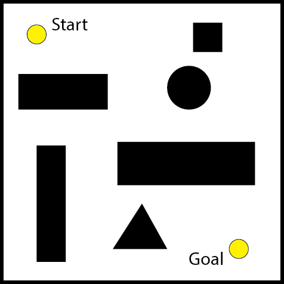
Of course, now you’re saying - ‘What’s the great issue? It’s still so simple, just like those mazes I used to do when I was 5 ’. But how would you go about making a robot or a computer solve it, given that robots have limited memory space? Of course you also want your robot to follow the most efficient trajectory through this, in order to save battery. Not so simple now, eh?.
Well, welcome, everyone, to the problem of Robotic Motion Planning.
Ok, we know our problem’s name. Now let's get to solving it. Ok Step 1... . What is Step 1?
Random Tip - Ever been programming and been stuck like this? Having no clue what your algorithm should do next (or first XD)? - I might have a solution. Ask yourself - “ What would I do, here?”. And try to duplicate whatever you think of, in code. :D.
Now, what would we (or a general person) do to solve this? Let’s see -
Step 1 - We look at a map, and try to comprehend it.
Step 2 - We then try to find the best path in this map that we made in our head.
Step 3 - We try to follow the path that we made in this map that we made.
And there, we have the base algorithm to go from the start to the goal. Yay. Now let’s see how to duplicate this in code.
Mapping
So..., we need to make our robot comprehend the map. How do we do this? Of course, our robot understands only data as binary. So we need to convert the map into data, to be more specific we need to extract some valuable information from the map and represent it as data - in what we call data structures ( int, arrays, stacks, queues are common examples )
Here, we will not discuss how data is extracted from the environment and converted to data structures (A vast topic for another blog). We will, instead, see how the data is represented cleanly and efficiently in some widely used Data Structures.
Graphs
Graphs are a type of map where we extract only some important points (called Nodes) from an environment and distances between them. Like this -

Graphs are generally used when we have straight line paths between points in the map and distance between all of them can be known beforehand. A good example of graphs used in code can be found here.
Occupancy Grid
Graphs of course are very restrictive, they can only hold very little data and make lots of assumptions about paths between the points. What we need is to represent the entire map, so that we know the state of every point. Now it will be easier to make accurate and efficient paths across this map.
An occupancy grid is a mapping method where the entire environment is divided by a grid system into small cells, and every cell stores a value which identifies the state of that cell.
Basically this can be viewed as a very large array of values, which indicates whether a cell is empty in the environment, or that it contains an obstacle.
For our 2D obstacle map earlier, the occupancy grid might look like this -
Here, the darkness of each cell indicates the probability that it is filled (In code, we would represent each cell by a number, which could be intensity of black in this case). A better map can be made by decreasing the cell size, but there is a substantial memory increase on doing so.
Ok, so we have our Occupancy grid which holds the entire map and is accurate to a reasonable degree. Why go further? Well, the problem is that an Occupancy grid takes space. A LOT of space. It also holds data about some parts of the map that the robot might never even visit. A better alternative to this might be to only hold data about the parts which we need, right?
Configuration Space
Configuration space is a sort of alternative to an Occupancy Grid in certain situations. Say we have a robotic arm which has one shoulder joint and one elbow joint ( 2 degrees of freedom )
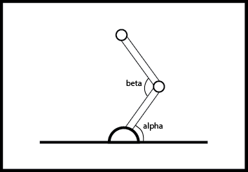Now this arm’s state can be written at all points, by just two parameters - the angle of the shoulder (say alpha) and the angle of the elbow (say beta). Hence the entire map of this robot’s environment can be drawn in a coordinate frame of alpha and beta like so -
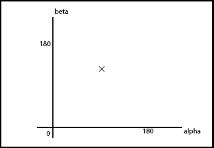Obviously, here every point represents some specific configuration of the arm. And hence this map can also be used to show the entirety of the arm’s environment. Also, any real world obstacle can be also represented here as points in which the arm cannot go. For example -
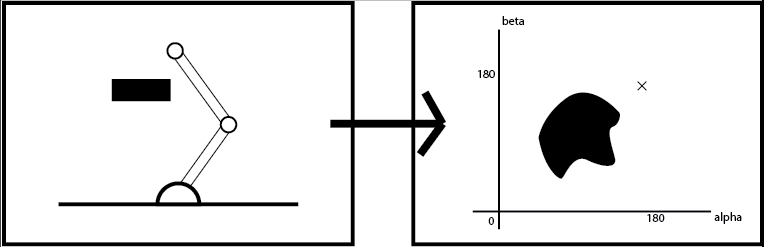This diagram is just representative. It is not accurate.
Thus the problem simplifies to finding a trajectory in this new map. This map is what is called a configuration space.
Oct-Trees
An Octree is a type of map which is similar to the Occupancy grid, however in this, we only focus on the parts that are necessary, and the rest of the map is not focussed (i.e. we hold only certain parts of the map in full detail).
Let’s take an example -
Let’s divide this map into four equal parts (see image below). We see that parts 1 and 4 are partially covered by obstacles, while part 2 is completely free and part 3 is completely covered. Now since we know that parts 2 and 3 are complete, we do not need to improve the map in those regions further. However, we need to focus on parts 1 and 4. To do this we further subdivide these into 4 parts, and repeat the procedure. Doing this repeatedly, we can form a very accurate map of the environment, while making sure to focus only on the region that is required.
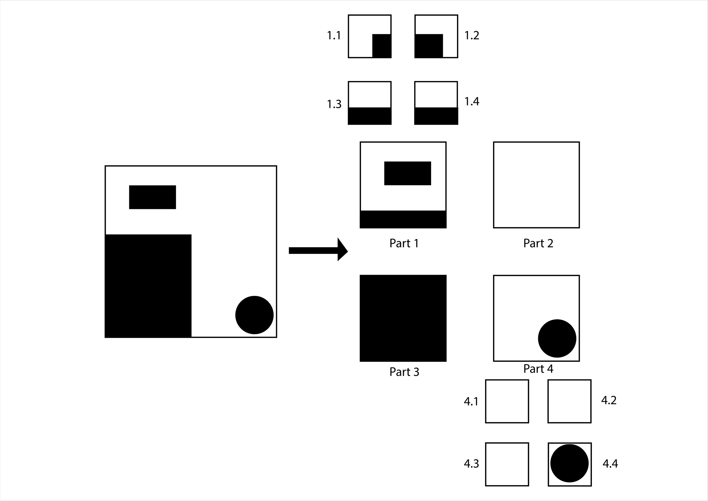To store this map, we make a tree type data structure, with each node as one of the sub parts we made here. A Node only has subnodes, if it is partially filled - i.e. there is a need for it to be more accurate. A diagram for the above example -
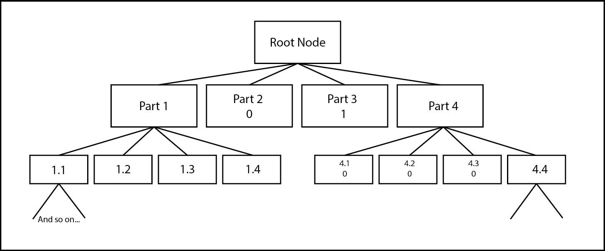Since this is a 2D case, each node can have utmost 4 subnodes, however in 3D, a cube can be divided into 8 sub cubes and hence each node will have utmost 8 subnodes, hence the name, the Oct-Tree
Great! Now we know how to map a general environment, depending on our need, in the most efficient way. Now let's get to step 2 - Finding the best path in the graph we generated. This step is called Motion Planning
Algorithms for motion planning - Step 2
Grassfire
The Grassfire algorithm is a simple procedure to find the best path between two points in a map. In this we start at the goal point and mark it as 0. Then we take all adjacent points and mark them with 1. Now the adjacent points of these points are marked as 2. This is done until all possible points are covered i.e. there are no more adjacent points to mark. Now starting at the Start Point, we follow the path where the marked value keeps reducing. This is shown in the following diagram -
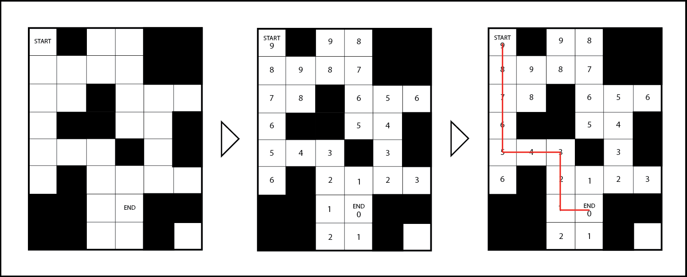Here, we must also check whether the start point is marked. If it isn’t marked it implies a case where there is no path from the start to end point. Thus the grassfire algorithm is complete - that is it takes into consideration all the possibilities.
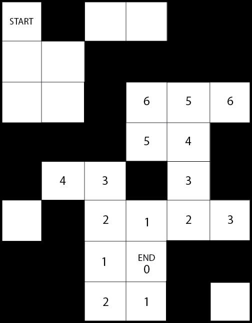Dijkstra’s algorithm
Dijkstra's algorithm is another great approach to find the shortest path in a map. This algorithm is however more general and can be applied to both graphs and occupancy grids ( since occupancy grids can be thought of as a graph with each of the nodes at a distance of 1 unit from each other).
The Dijkstra’s Algorithm proceeds at the start node. Every Node which has a direct path from this node is labelled. This means that we know that this is the shortest distance we know to these nodes from the start node. Now we move to the node at the shortest distance from the current node and repeat the procedure of marking each node with its shortest known distance from the start. We must also observe that we might update some distances to shorter values, since we find shorter paths through other routes. This is done until we reach the ending point, or we have marked every point in the graph (as per our needs). The following gif shows this algorithm in action -

A* Algorithm
Ok, so we learnt both the Grassfire and Dijkstra’s algorithms. These algorithms are both complete and accurate and work pretty similarly. The following GIF shows the working of the Dijkstra’s and Grassfire algorithm in a general map.
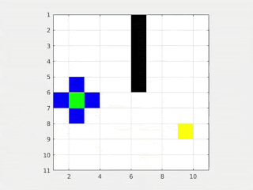So what is the problem here? Well, similar to the mapping situation, both these algorithms are marking points in the map, which may never be visited by the robot. So how do we reduce this marking? Is there a way to know or predict beforehand which direction to search in for the goal?
Hmmm let’s see… So we know that these are points in a graph and we know their coordinates. We also know that every turn the robot takes in this map will be a 90 degree turn. Hmm 90 degrees, that’s a very good constraint. What important and common theorem do we know that can help us in cases where we need distance between two points and 90 degrees….
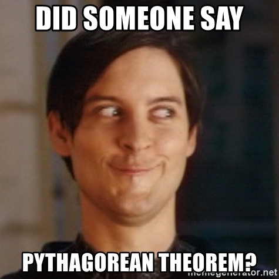Ok, so now we know that the distance between the two points in this graph is given by -
So since we have an approximate of what the distance between the two points is we can make sure to look only in the direction in which the distance is decreasing -
See, so much simpler. Now this is what is called the A* algorithm. In this algorithm, we use certain constraints of the map (here 90 degrees) to come up with a heuristic distance approximation between points (the pythagorean theorem here). This way we make sure to search only along the direction which we predict gives the shortest path. However, this may entirely be wrong in some graphs, and in such cases , we will end up taking the longer route. However in most cases, A* is the algorithm to go for.
Artificial Potential Field
So far we’ve discussed quite some methods of trajectory planning. However, for most real world situations, our environments are continuous. What if we had some smooth function which could tell the robot which direction to move in? This can be similar to a ball rolling down a hill where the ball follows the direction of least gradient to reach the bottom. To do this we can construct a simple function whose minima is at the goal and which increases as we move further from the goal (this function can be any function, for example a simple quadratic will also work).
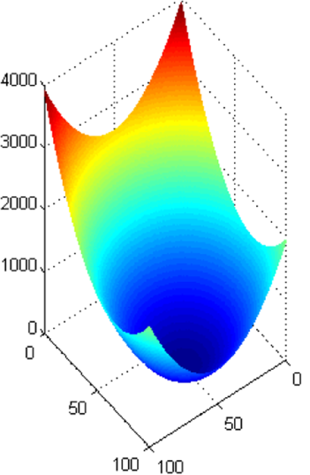Ok, so at every point in the map, our robot knows to follow the direction in which the gradient is minimum. But what about obstacles? Well since we know from the laws of electromagnetics that potential fields work both ways, we can make a reverse i.e. repulsive potential field for every obstacle. Something like this -
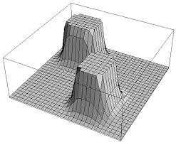There is however one problem - Since we are adding two curves and because of the shape of certain obstacles, we might introduce certain local minima in our graphs, which might make our robot get stuck at locations other than the goal.
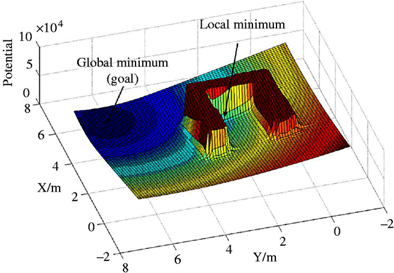How to solve this problem? Let’s leave that to you guys to figure out. ;P
Following The Trajectory - Step 3
Ok so, we’ve learnt how to represent our environment so our robot understands it, and we’ve learnt how to make a good trajectory in our map. So what was the next step? We need to make the robot follow the trajectory we planned. So how do we do this? Well, we read the previous blog post of course, which explains a way to do exactly this. :D
So, if you made it this far, you know a lot about robotics motion planning.
Yay!
Let’s meet on the next blog!
Subscribe below to receive emails about more such awesome articles